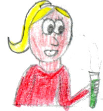
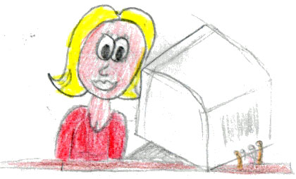
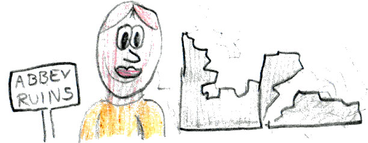
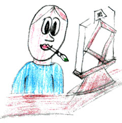

How you go from "I've never made a game" to building space travel games that teach real physics — A Space Travel Games Construction Kit.
Ever want to make a computer game? You don't need to already know how to program, or anything about space travel. You have a team of experts. Your first games will be very simple — but if you stick with it, you'll build games to be proud of. Building games is fun. Hard fun.
The Director of the studio hires you as a game developer. Your first assignment: a space game that is realistic and fun, and simple. The player is an astronaut who is adrift in space and will die if she can't get back to her ship. The Director assigns you a team and tells you to go and talk to them — because you start with nothing. No code, no behaviours, just a picture of an astronaut floating in the dark.
Click Visit with your Team any time. Each expert has their own job, and each has something new to say nearly every time you visit. You'll usually need to visit more than once.

TistScientist — the physics
JammerProgrammer — the gadgets
IanHistorian — the real story
MatorAnimator — the artVisit Tist the Scientist. She explains why an astronaut adrift can move at all: conservation of momentum. Throw a rock one way and you drift the other way — and in space there's no friction, so you keep going. That's Newton's Third Law: every action has an equal and opposite reaction. Now Tist has handed the programmer the equation he needs.
Now visit Jammer the Programmer. Because Tist explained the physics, he can hand you behaviour gadgets: a Horizontal Velocity Gadget (so the picture can move at all), a Horizontal Rock Throwing Gadget (so throwing a rock changes your speed), and some gauges. Each gadget is a little program. Flip one over with FLIP to read its code; the parts in red you can change without knowing how to program.
To give the astronaut a behaviour, drag the gadget onto the back of the astronaut. Put it on the wrong object and the kit will warn you — and the game won't work right until you fix it. (Mistakes are allowed. That's how you learn what each behaviour is for.)
Press Start Game and throw some rocks with the arrow keys. The astronaut glides toward the ship... and slides right past it. Nothing happens. Press Stop, and the kit tells you what's missing — with a button to go back to your team.
Signer, your assistant game designer, now has something to say (she didn't before — you hadn't tested anything yet). She lists the four things that should happen: reach the ship safely (win), reach it too fast (crash), run out of rocks, or run out of air. Take that idea to Jammer, and he builds the Reached or Missed Ship Gadget — four little programs in one. Drop it on the astronaut.
You have a game with stakes: dock gently or crash, and a clock — the astronaut only has so much air. Open a gadget's SETTINGS to change the numbers: how big the rocks are, how fast they're thrown, the safe docking speed, the seconds of oxygen. Watch the dial gauges. Drag the astronaut and the ship to set up a harder rescue. You are no longer playing a game — you are designing one.
Once the basic game works, Signer wants to make it less "one-dimensional," and Jammer copies his horizontal code into vertical gadgets so the astronaut can move up and down too. Then you switch to a whole new game: the Lunar Lander. Visit Tist about gravity, get the gravity / thruster / vertical-velocity gadgets from Jammer, and try to set the lander down gently. The thruster throws fuel downward so the lander rises — momentum again, just pointed at the ground.
schedule code. Change the
numbers, press Run Auto-pilot, and watch the lander fly your edited plan by
itself. You just turned playing into programming.Without it ever feeling like a lesson, you've used conservation of momentum and Newton's third law, gravity near a moon, the square-root distance formula, a little history of the Space Race, and the real loop of game design: build something small, test it, find what's missing, and improve it. You learned that in a computer a thing doesn't move until you give it a program to move — and that a recording of what you did can become a program.
Physics. Mathematics. History. Art. Programming. Game design. All of it, because you wanted to get one astronaut home. Hard fun.
A Space Travel Games Construction Kit — player's story. Open index.html
to build the games yourself.